Novak Djokovic's Forehand: The Full Turn and Backswing¶
John Yandell¶
So in the first two articles we looked at the unique combination of grip and court position in Djokovic's forehand (link), and the start of the preparation with the unit turn and the step combinations that initiate it (link).
Now in this third article let's took a close look at the completion of the preparation, the backswing, and the set up of the hitting arm position before the start of the forward swing. We'll see some things are seemingly unique to Novak. We'll also see some things that undermine some of the claims about what makes a forehand "modern."
The Full Turn
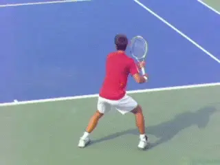
Let's examine the completion of the preparation, the backswing and the hitting arm set up.
So after the unit turn with the hips and shoulders turned about 45 degrees, what happens next? The body turn continues to turn seamlessly as a unit. But now the hands and arms start to move on their own.
They start up together with both hands on the racket. This is initiated by raising the arms from the shoulder with the elbow leading.
Then as the hands come up they start to separate. The exact timing and shape of this separation move is individual with the top players.
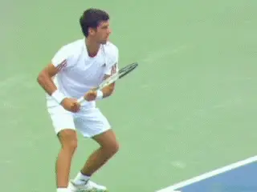
Djokovic keeps both hands on the racket longer than most players, separating them after they have moved past the center line of the chest.
Some players keep both hands on the racket longer. Some raise the hands more, or raise them less. Some players separate the hands before they reach the midpoint of the torso.
Others hold on well past this point. Djokovic falls into this category with both hands staying on for a significant duration compared to other players, similar to Nadal although maybe not quite as extreme. All the while as the hands start to go up, the shoulders are continuing to turn.
Arm Stretch
When the left arm detaches, it then starts to straighten out and point toward the sideline to the player's right. The preparation or the full turn is complete when the left arm reaches maximum stretch and the shoulders reach maximum turn. This is a core position we have seen many times, a fundamental of good forehands at all levels. (link.)
At the completion of the turn, the shoulders have reached an angle of at least 90 degrees to the baseline, and usually a little more, especially with elite players. The chin is turned looking over the left shoulder.
The left arm is more or less parallel to the baseline, pointing directly at the sideline. At this point some players straighten out the elbow completely. Players who hold on with both hands longer like Djokovic, often tend to have some bend at the elbow.
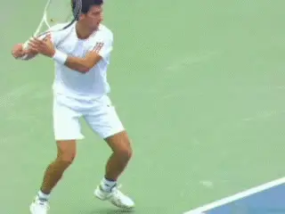
After the hands separate, the left arm stretches across pointing at the sideline.
A key point to notice--and a required checkpoint for any player trying to develop the forehand--is the timing of the turn. [Notice that the full turn and the arm stretch overlaps with the bounce of the ball on the court.]
This can vary somewhat, and for the pros is sometimes slightly after the actual bounce. But for the average player, timing the turn to the bounce can be the magic key in achieving great preparation. It's doesn't help to reach the turn position if it happens to late to execute a sound forward swing.
At the completion of the turn notice also the difference in the angle between the shoulders and the hips. While they were similar at the unit turn, the shoulders have now turned further, 90 degrees plus to the net. This is significantly more turn than the hips which are at about 45 to 60 degree angle.
This hip/shoulder displacement has drawn a lot of attention among elite coaches, and may be a key to power. But is the offset in these angles something that the average player should be worried about trying to consciously create? Probably not.
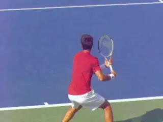
At the full turn the shoulders are turned beyond 90 degrees, but the hips less, probably about 45 to 60 degrees.
[The key is to get the hips rotating correctly at the start of the unit turn,] a big problem for the average player as we saw in the second article. As the preparation progresses, if the shoulders turn as far as is natural, if the left arm stretches, and if the alignment of the feet is also correct, the angle of the hips at the full turn will probably be automatically correct as well.
As the turn is completing the racket hand now begins to move upward independently of the left arm. At the completion of the turn the racket has reached about the top of the backswing, or in some cases, including Djokovic actually started to move slightly down. We'll look at the entire backswing in more detail below, but first lets look at the rest of the preparation, including the use of the legs and also the stances.
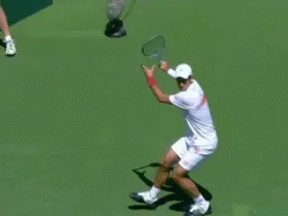
Novak's backswing has started slightly downward at the completion of the turn.
Legs and Stance
The use of the legs is a huge factor in the preparation on a modern forehand. Characteristically, top players coil or load the outside leg with a knee bend of 30 degrees or maybe even more.
But we have to be careful here because the timing of this factor varies. The loading on the outside foot can occur simultaneous with the full turn of the upper body, but often it doesn't. The correspondence depends on where the player is on the court, the amount of movement to the ball, and the time interval he has to execute.
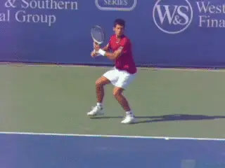
A critical component in the forehand is the loading on the outside leg.
In reality the turn and the coiling of the legs are independent elements. They can coincide but they can also occur at different times. On the run for example, the coiling of the legs and the knee bend usually occurs much later than the body turn, at a time when the forward swing is already in progress.
For the sake of developing the core elements, however, we can look at the turn and coiling of the legs together. We can do this by looking at balls in the center of the court where Djokovic (and other players) have time to execute the full turn and to coil the legs at the same time.
Once a player feels these elements and how to set them up, they will tend to occur naturally in the right sequence when he is moving around the court. Watch in the animation when Djokovic is on the move how much later in the motion he sets up the coil.
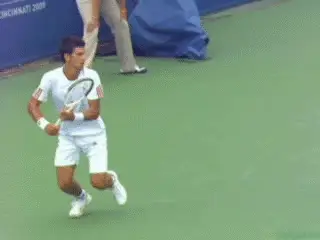
On the move the coiling of the leg can be significantly later than in the more basic set up above.
Stances
Stance is a complicated and debated topic in coaching, because of the predominance of open stance hitting in pro tennis. We'll address this debate below, but whatever the stance choice, the position of the opposite or left leg at the completion of the turn is critical.
The left side and the left leg need to rotate as a unit with the body as it turns. This means the left leg will come upward and forward and around with an offset of about a 30 to 45 degree angle to the rear foot. A good basic checkpoint is that at the point the leg will have rotated so that the player is up on the toes of the back foot with the sole of the left foot is pointing more or less back at the sideline.
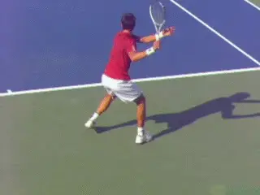
The preferred pro level stance: semi-open.
From this position, a player can hit with a semi open stance, which is far and away the predominant stance in the modern game. But he can also step forward with the left foot into a neutral stance, which is common when the ball is low and/or short.
The point is that the turn is critical in setting up both the upper body and the legs to maximize leverage in the forward swing. The choice of stance will usually be determined by ball depth and ball height.
[Because in high level tennis the contact points tend to be above waist level--and sometimes at shoulder level or higher--most pros will hit semi-open.] But, as noted, [when the ball is lower they will also step in and hit with a neutral or square stance.]
In the neutral stance, the player steps forward with the front foot and a line drawn across the tips of the toes of both feet tends to be parallel with the target line. [This is different and not to be confused with the closed stance in which the player steps across this line.] You do actually see closed stance occasionally on the forehand, but it is relatively rare in the pro game.
The neutral or square stance is somewhat problematic in the pro game because it makes the massive torso rotation in the forward swing more difficult as we will see in the next article. Pro players often end up rotating the front foot severely during the swing, or coming off the court altogether in the followthrough.
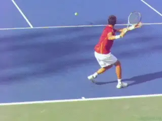
Neutral stance: a function of ball height.
For the club player, the neutral stance can be far more applicable than in the pro game.This applies when the ball bounces lower with less spin and the contact height is naturally around waist level. Club players in general will (or probably should) have less total rotation with the torso as this is more difficult to control and is best suited to contact with one or both feet in the air.
So it's not about which stance is better or worse, but more which is more applicable for a given ball hit by a given player at a given level. This is why club players should be wary of learning strictly open stance in order to "play like the pros."
They should definitely learn to hit open and neutral. In my experience, learning the neutral stance is also often the solution for players who struggle to make a full turn. Stepping forward with the left foot forces them to bring the left side around and develop that feeling.
How Open?
Another confusing point on stances is: how open is open? Some players and coaches in the rush to play the modern style have moved toward a totally open stance, in which the feet are not upset and are parallel along the baseline, or close to it. But, as the high speed video shows, this is used on a minority of balls by the top players.
Djokovic, like most all top players, hits fully open at times. But this tends to happen when he is on the run, or is forced by the ball on time, depth, or speed.
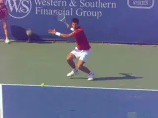
The fully open stance---sometimes chosen as a model, but actually a rarity in the pro game.
When players use the fully open stance, the left foot does not come up and forward as much if at all. This can make it more difficult to get the hips and the shoulders turned, especially below the pro level. It's important to note that given the choice, even the top players are choosing semi-open.
Although it is sometimes assumed that the fully open stance is one of the keys to power in the modern game, this does not seem to be the case. Rather, players use semi-open stance whenever possible because it allows them to coil the body more fully or at least more easily.
As I wrote in the second article (link), one of the most common problems for lower level players is that the left side and the left leg don't turn sufficiently. This restricts the entire turn. It also limits the choice of stances and tends to force players to hit more radically open than is appropriate on most balls.
[For the average player the fully open stance just makes these problems worse and is the most difficult to master, because of the increased difficulty of turning fully. So it has even less applicability at the club level.]
Backswing
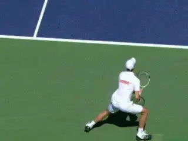
Let's examine the entire path of Djokovic's backswing.
So we've looked at the start of the backswing above, but now let's go back to the ready position and trace the full path of the hands and racket in more detail. Let's look at the shape of the backswing from the start of the motion to the start of the forward swing, and particularly, what happens as the motion moves downward from the top.
Djokovic waits in the ready position with the racket face turned partially down at about a 30 degree angle to the court. As the unit turn starts, he turns the face slightly further down, with the face almost flat to the court. This is very natural with his grip.
As we have seen there isn't much internal arm motion with the racket hand or forearm at until the completion of the unit turn. The only real movement is that he tilts the tip of the racket up around 30 degrees or so from parallel to the court, partially facing the opponent.
As the turn continues though, the hands start up as he raises the elbow and arms from the shoulders. At this point, Djokovic starts to turn the inside edge of the racket closest to him downward. As the elbow continues to rise, the racket tip also tilts upward somewhat more, to about a 45 degree angle.
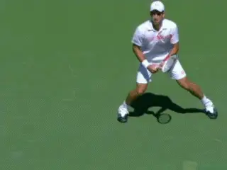
The face turns down, the tip points up, the elbow rises, the top edge continues to turn down until the face is perpendicular with the court.
When the hands reach shoulder level, they start to separate and that's when we see the left arm start to straighten out and stretch across the baseline. But meanwhile, the right racket hand and the edge of the racket have continued to rotate down until the plane of the racket is basically on edge to the court. Also notice also that the tip of the racket is still tilted forward toward the opponent at about a 30 degree angle, not unlike Federer or Roddick.
But watch what happens next! The racket face doesn't stop there, it continues to rotate. The edge that was facing downward keeps turning until the plane of the face of the racket is virtually facing the baseline!
Watch closely how this happens. The hands are separating. The left arm is stretching. The elbow is continuing to rise. But then watch how the elbow moves to Novak's left, until it is slightly behind him and aligned with the about center of the torso.
At the same time watch how the elbow starts to straighten out. This combination of movements takes the face of the racket back until it is square or parallel to the back fence.
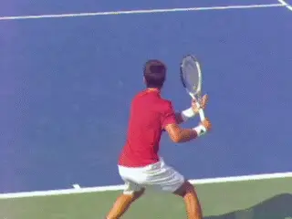
Two views of how Djokovic rotates the racket face until it is actually parallel with the back fence.
And now look at the angle of the tip. It's still titled about 30 degrees, but now rather than pointing at the opponent, it's pointing to the right sideline.
So that's an unusual, rather complex move, to say the least. Correct me if I am wrong someone, but I don't think you see that with any other top player.
Try it for yourself. With an eastern or a mild semi-western grip it is very difficult to achieve the range of motion you need in the shoulder to get their. You can feel the pressure on the joint. Now shift to Novak's grip and you can get there much more easily. Achieving this position is actually one indication of how extreme his grip really is.
How High is High?
The face of the racket reaches this extreme turned position at around or just after the highest point in the backswing. But that term "highest" is tricky, because the height of the backswing can be defined in two ways.
Is the height of the backswing dependent on the height of the hand, or is it the height of the racket tip? The two heights are very different across a wide range of pro players. ( for more on the backswing.)
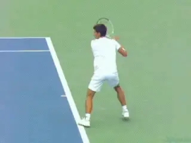
There are two ways to measure backswing height: the height of the racket tip or the height of the hand.
With Djokovic, you'll see that the tip of the racket is quite high, well above his head. But his hand is much lower than the racket, typically a little above shoulder height. Compared to other pros this hand position is relatively but not super high. Not as high as Del Potro, but somewhat higher than Federer or even Nadal.
Too Far Back?
There is one more interesting aspect to Djokovic's backswing besides the way the face of the racket turns so far behind him. This is how he has taken the hand and racket back, slightly past the right edge of the torso.
As is clear in the Stroke Archive, most pro men's players keep the hand more to the right side of the torso, while the women are much more likely to take the hand back behind the body. One exception is Robin Solderling who takes the hand very far back.
Novak doesn't go as far behind as Soderling, but his hand definitely moves further behind him that most men. So what does that actually mean? Something? A lot? Maybe not that much?
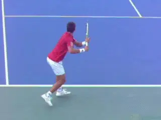
Djokovic takes the hand further behind him than most to men's players.
Rotating Back
It's also obvious that when Novak rotates the arm and face that far backwards to face the fence, he must also rotate it a corresponding amount back the other way to get the racket head into hitting position. Is that rotation an advantage, somehow, in developing racket head speed?
Does this rotation also relate in some way to the position behind the edge of the torso? Does he have to go that far back to open the racket face so that it faces the baseline or the stands? Hard to say, although maybe quantitative data will eventually tell us more.
So there is a huge range of backswing options all combined in different ways but different players---how far the hand goes up, how far the hand goes out to the player's right, how far it goes back behind him, how high the hand reaches, where the racket tip points, etc, to name a few. (link for another backswing article.)
It may be that one or another factor or a combination of factors has advantages, and maybe they are large enough to significant. But if there were vast differences in the effectiveness of these different styles, you would expect the players to have figured this out and I think we would see much less diversity.
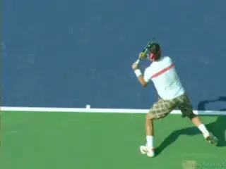
Is backswing shape fundamental, or a matter of flair? Look at the differences between Nadal and Federer.
Nick Saviano, said it years ago, and I think he still may be right. There are fundamentals. Then there is flair. Something like the unit turn falls into the fundamental category. The backswing, at least if it stays within certain limits, is more a matter of flair. (link to read more from Nick.)
If there are any relative advantages to certain backswings, one thing is certain. What happens before and what happens after the backswing are much more important than the personal variations themselves.
The Bottom of the Backswing
Which brings us to the next critical element. Enough about diversity for a minute. Let's look at a core commonality that is critical for all players. And this is how they set up the hitting arm during the beginning of the forward swing.
Let's look at what happens in the descending part of the backswing and how relates to the critical position at the bottom of the backswing and the set up and alignment of the hand, arm and racket.
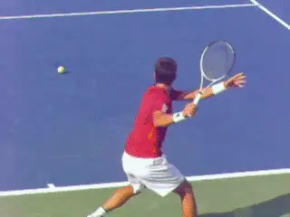
The dog pat with the face of the racket turned down to the court.
First let's look at the descending part of the backswing. The first issue we encounter is the meaning of the so-called "dog pat" position. The term dog pat refers to the fact that many players close the face of the racket to the court as it is moving down as if they were "patting a dog" with the racket hand. Watch as the elbow straightens out how the face of the racket turns down toward the court.
And many if not most elite players "pat the dog" to a greater or less extent. Djokovic definitely does. As the racket descends it turns so the face points almost directly down, approaching parallel to the court surface. For want of a better term, that's close to "full dog pat." For some players the exact amount of the dog pat seems to vary from ball to ball. But Djokovic tends to create full dog pat or something very close on every swing.
Then there are other players, who in general pat the dog much less, or sometimes not at all. This includes players with some of the biggest forehands in the game, Juan Martin DelPotro, for a recent example, or the great Pete Sampras.
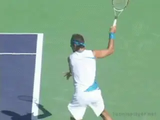
Some top players, like Juan Martin DelPotro, don't or rarely pat the dog.
So the dog pat can't be completely indispensible or some kind of prerequisite for a good forehand. But the question still remains, why do most players do it?
Years ago when filming an instructional video, I tried to take the dog pat totally out of my own swing for the sake of simplicity in demonstrating the model positions on the forehand. Interestingly, the video showed that, despite my best efforts, I still closed the face partially on the way down.
So it seems at least possible there is something natural, automatic and probably positive to it---again, something maybe we'll discover through quantitative analysis.
But having said that, trying to consciously create the dog pat can causes major problems for lower level players. Doing too much patting for too long can destroy the alignment of the arm and racket at the start of the forward swing.
If you look at the animation you can see how a club player can stay in the dog pat far too long, keeping the racket face down to the court well into the forward swing.Not only does he have the problem of adjusting the racket face angle much closer to the hit, he is in my opinion losing racket speed.
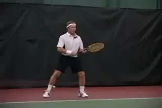
Watch how the racket face stays closed well into the forward swing.
Pro players may pat the dog, but the alignment of the hand and racket changes significantly as they set up the forward swing. The fact is that all top players have moved completely through the dog pat by the time the racket reaches the bottom of the backswing. At this point they have set up the hitting arm position and the angle of the racket face for the start of the forward swing.
Now the angle of the racket face in the hitting arm set up can be tricky to understand. This is because for most players the face will still be partially closed as the swing starts forward. It is just that the angle is less closed than at full dog pat.
Why is it closed and to what degree? This angle will be a function of the grip. The further underneath the handle--the more "western" the grip--the more the racket face will naturally stay closed when the player sets up the hitting arm position.
With players like Sampras or Tim Henman---players with modern eastern grips--you'll see the racket pretty much or edge, or slightly closed, say 30 degrees at most. Federer, regardless of the how much he pats the dog on the way down, will be closed about the same amount or at most slightly more.
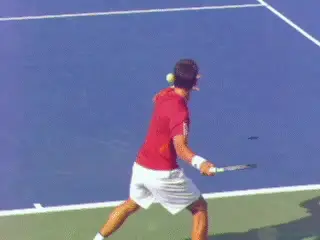
At the bottom of the backswing, grip determines racket face angle.
At the other end of the spectrum a player like Nadal can have the face closed 60 degrees or more, again as function of his grip. This is about the same for Novak, who as we saw has a surprisingly extreme grip, as extreme as Nadal or maybe even a little more underneath. (If you want to understand more about how and why this happens, link.)
Watch how Djokovic's racket face moves from the full dog pat position to the start of the forward swing. The face starts almost closed to the court surface, but as he sets up the hitting arm position the arm turns until the racket is at about 60 degrees to the court. That angle, again, is typical for a player with his extreme grip structure.
Players who focus too much on patting the dog, often don't make this critical transition. But top players do, as do all players with good forehands.
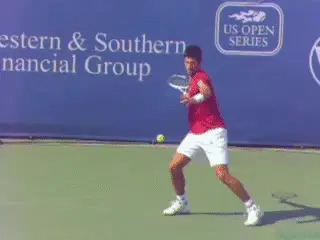
Two views of the double bend hitting arm position: elbow in wrist back.
Double Bend
Which brings us to the shape of the hitting arm itself. As we noted in the previous articles, both Roger Federer and Rafael Nadal hit their forehands with the elbow straight. (That's true for Nadal pretty much all the time. For Federer straight arm is his preferred configuration although he often hits double bend in certain circumstances.)
This straight hitting arm position has been touted as the magic secret to creating the modern forehand, and even, to developing a great forehand at the club level. But now we have the number one player in the world, using the classic double bend configuration.
Watch how Novak sets this up, with the elbow bent and tucked in pointing toward the torso with the wrist laid back. This is the same configuration we've seen in great forehands including Pete Sampras and Andre Agassi. We can see it also with another top 5 player with a huge forehand, Robin Soderling.
So is it the straight arm that makes Nadal and Federer's forehands great? Or is it Rafa and Roger? Or both? Would they still have great forehands with the double bend configuration? Interesting questions, just impossible to answer with cloning them for a little test.
But one thing we do know for sure, using the double bend configuration, Novak has been able to compete with them, defeat them, and reach their same level at the top of the world. My personal view for several reasons is that this configuration is simpler to master, equally powerful, and certainly more consistent for the vast majority of players. (link for more on the double bend.)
Not everyone will agree with that, of course, but for an interesting similar perspective, check out the article in this issue from noted Marin County California tennis coach Paul Cohen. (link.) And we'll see more about how this hitting arm position works for Novak in the forward swing next.
So that's it for the completion of the preparation and the backswing. Next: let's move on and see how Novak completes his swing and creates the velocity, spin, and consistency that took him to the top. Stay tuned!

John Yandell is widely acknowledged as one of the leading videographers and students of the modern game of professional tennis. His high speed filming for Advanced Tennis and TPA have provided new visual resources that have changed the way the game is studied and understood by both players and coaches. He has done personal video analysis for hundreds of high level competitive players, including Justine Henin-Hardenne, Taylor Dent and John McEnroe, among others.
In addition to his role as Editor of TPA he is the author of the critically acclaimed book Visual Tennis. The John Yandell Tennis School is located in San Francisco, California.
← Start of the Preparation | Advanced Tennis Index | The Forward Swing →